Project 2: Fun with Filters and Frequencies!
In this project, we explore filters and convolutions, looking to apply them in unique ways to change images or blend images together.
Part 1: Fun with Filters
Part 1.1: Convolutions from Scratch!
In this section, I use three filters on a picture of myself: a 9x9 box filter, a finite difference filter in the x direction, and a finite difference filter in the y direction. To apply a convolutions, (1) padding must be added to the edges of the image to keep the output image the same size (filled with zeros), (2) the filter must be flipped, (3) the filter must be multiplied by a window over every pixel in the image. We do this for all three filters, with implemntation in two different ways:
- Using four for loops. This loops through every index in the image, as well as every index in the flipped filter to individual multiply each element.
- Using two for loops. This only loops through every index in the image, and "cuts" a window out of the image, then performs a dot product with the flipped filter with the window.
The 9x9 box filter is simply a 9x9 2d matrix with a value of 1/(N*N) for each cell, or 1/81.
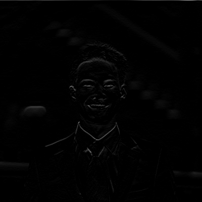
The dx filter displays all horizontal edges.
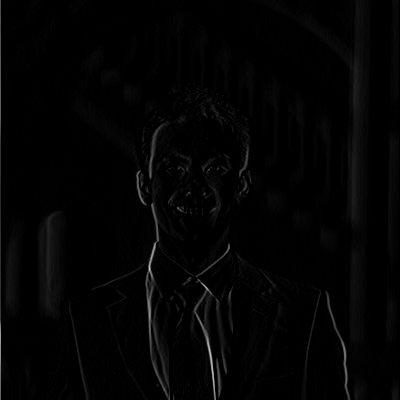
The dy filter displays all horizontal edges.
Part 1.2: Finite Difference operator!
This section reuses the finite difference operators (dx and dy) to create a gradient magnitude image. To create the gradient magnitude image, we can first convolve dx and dy, then convolve that with the image. We then create a binarized edge image by specifying a threshold, only allowing magnitudes that are at least a specific value to only allow edges through.
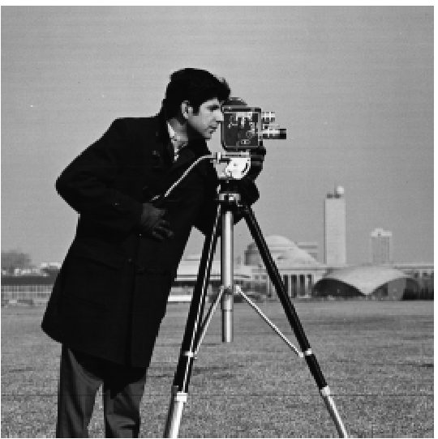
The original cameraman picture
dx filter
dy filter
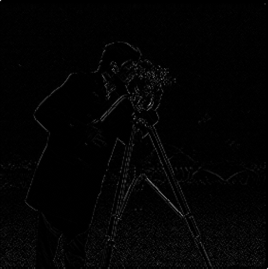
Both dx and dy
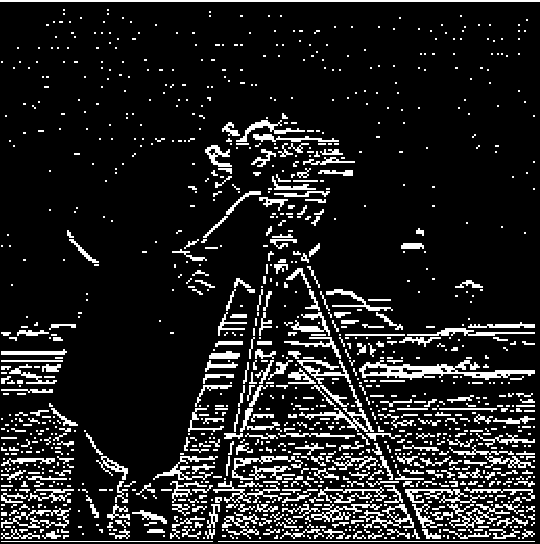
dx and dy, then binarized
Part 1.3: Derivative of Gaussian (DoG) Filter
This section is the same as the last one, except with an additional gaussian blur. This removes all the extra edge noise from the previous part. Just like the last part, we can convolve the filters with each other before convolving to the image, but the output would be the same if we did each convolutions one at a time.
Gaussian and dx filter
Gaussian, dx, and dy
Gaussian, dx, and dy, then binarized
Part 2: Fun with Frequencies!
Part 2.1: "Image "Sharpening"
In this section, we amplify the high frequencies of an image to sharpen it. To obtain the high frequencies, we can subtract the original image by the blurred image (which is are the low frequencies). Then, we can readd the high frequencies to the image, effectively doubling the magnitude of the high frequencies. I do this for the given image of the Taj Mahal, in addition to a few images I selected.
Original
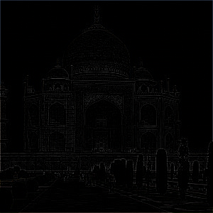
High filter
Low filter
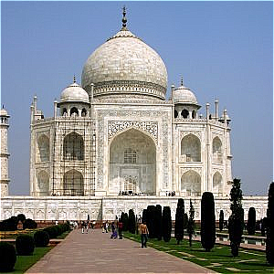
Sharpened
Original
Sharpened
Original
Sharpened
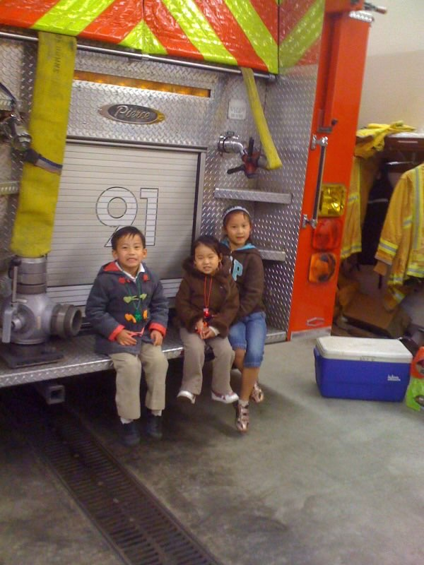
Original
Sharpened
Original
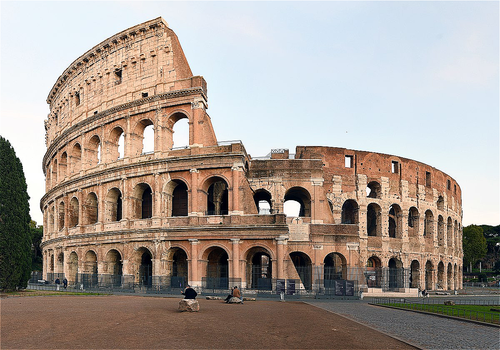
Sharpened
Part 2.2: Hybrid Images
In this section, we combine the high frequencies of one image with the low frequencies of another images. This results in one image being more visible up close (the high frequencies), whereas the other image (low frequencies) are more visible from far away. To do this, we first align the two images so that they overlay each other, then do a high pass filter (original - gaussian) on one, and a low pass filter (gaussian) on the other. After that, it is just about tuning the different sigma values for the gaussians. To gain more intuition, for one set of images, I plotted the Fourier Transform, displaying the frequencies of the image before and after. We will show the full process for one set of images (Derek and Nutmeg), but just the final result of the others. Derek was chosen to be the low frequency with the cutoff frequency of sigma = 7. Nutmeg was chosen to be the high frequency with the cutoff frequency of sigma = 11

Original

Original
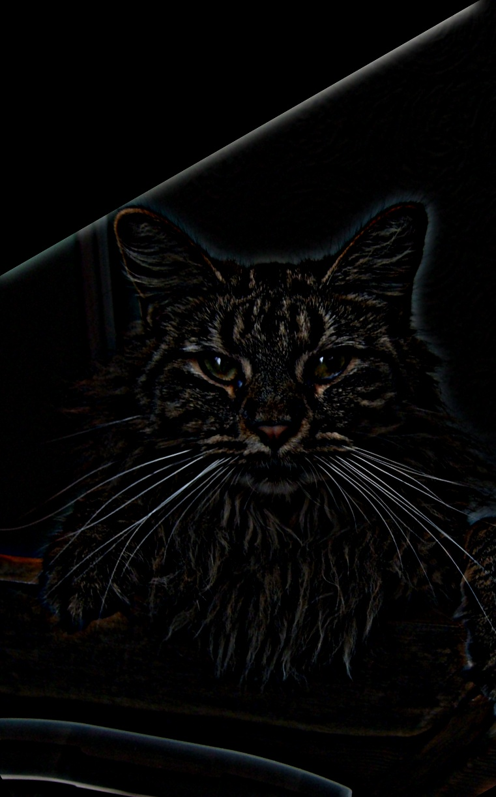
Nutmeg (a cat) as a high frequency
Derek (a human) as a low frequency
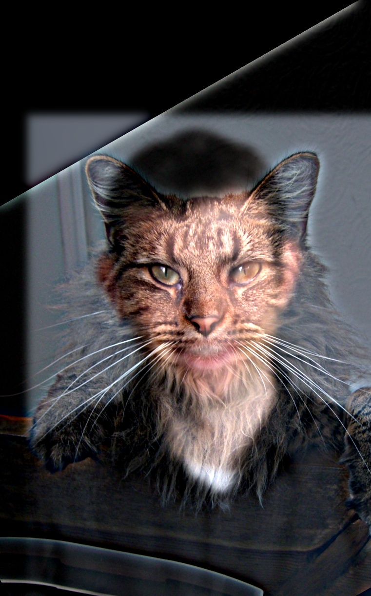
Hybrid Image
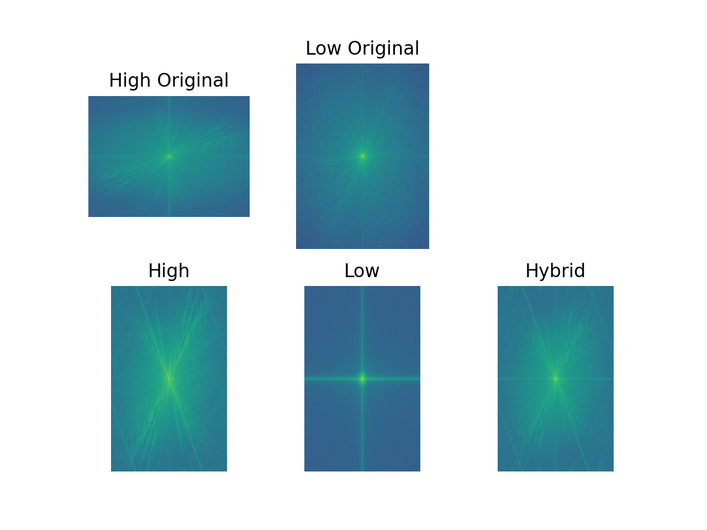
The Fourier transforms. Notice that for the lower frequency images, there are much less dots far from the center (except the cross which is likely due to the edges of the image). Meanwhile, the high frequencies are completely spread out.
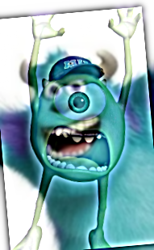
Mike and Sully from Monsters Inc Hybrid
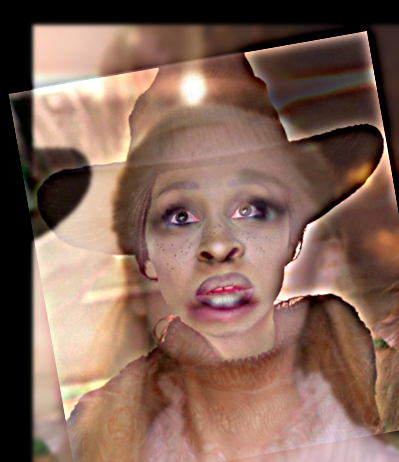
Elphaba and Galinda from Wicked Hybrid
Part 2.3 and 2.4: Multi-resolution Blending and the Oraple journey
In this section, we gently seam two images together with gaussian and laplacian stacks. Laplacian stacks are essentially a group of bandpass filtered images. These are created by subtracting gaussian images of increasing blur with each other, obtaining specific intervals of frequencies. Rather than just seam the image itself, it looks much better when every image in a laplacian image or stack are seamed, then all collapsed back into a single image (plus the blurriest gaussian image to get the lowest frequencies). This will be demonstrated with the oraple a blend between an orange and apple. To do the individual blending, we create a mask to apply on each image. This mask specifies the degree of magnitude of the pixels at each point in the image. An example of this would be keeping the left 1/3 of an image as original, the middle 1/3 slowly decreasing in magnitude, and the right 1/3 completely black. This is exactly what we do for the oraple. We specify these three regions to make the apple appear more on the left and the orange on the right, with a gradual transition in the center Below, we will visualize this whole process for the Oraple, then show two more examples of irregular masks (circular)

Original Orange

Original Apple
sigma = 1
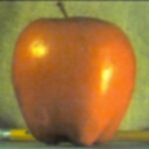
sigma = 2
sigma = 4
sigma = 8

sigma = 16
The Gaussian for the Apple
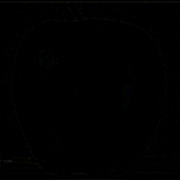
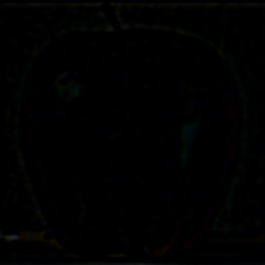
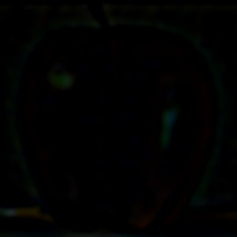
The Laplacian Stack for the apple
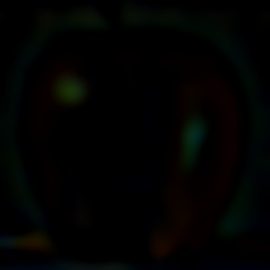
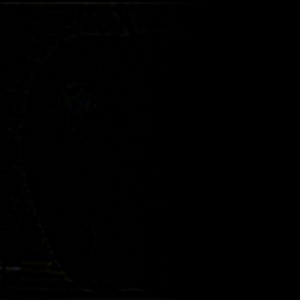
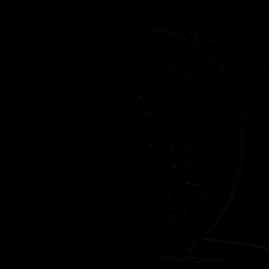
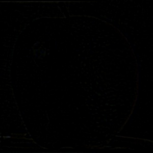
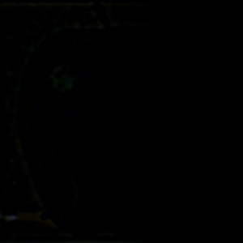
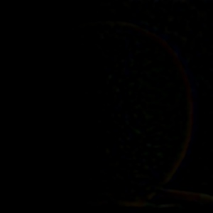
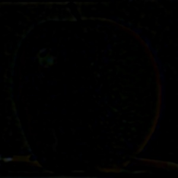
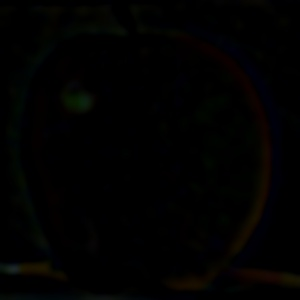
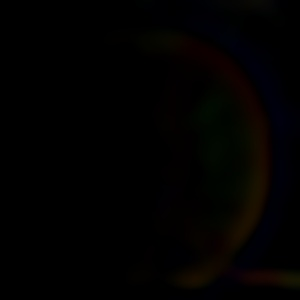
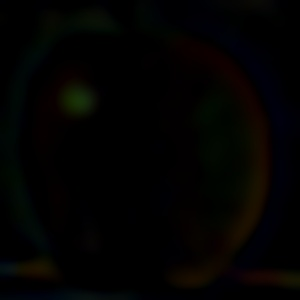
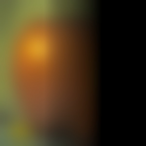
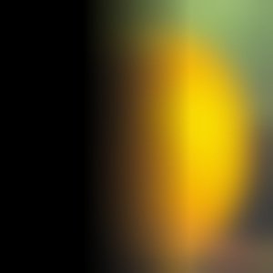
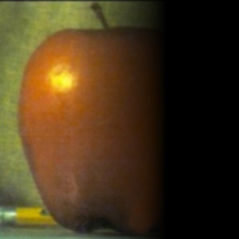
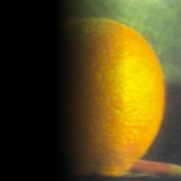
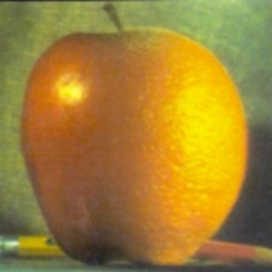
Frodo in Sauron from Lord of the Rings in a irregular mask
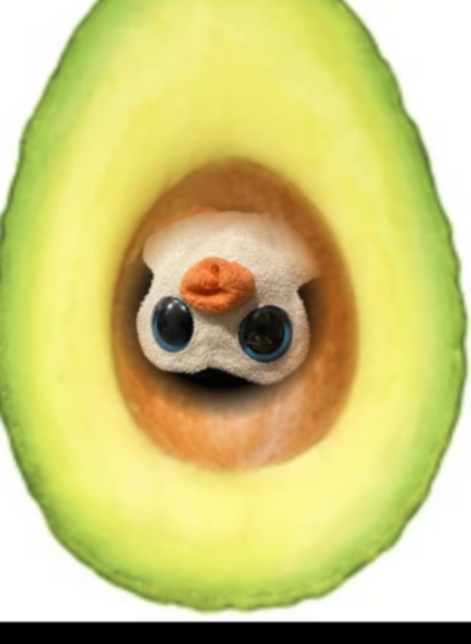
A penguin stuffed animal in a avocado in a irregular mask